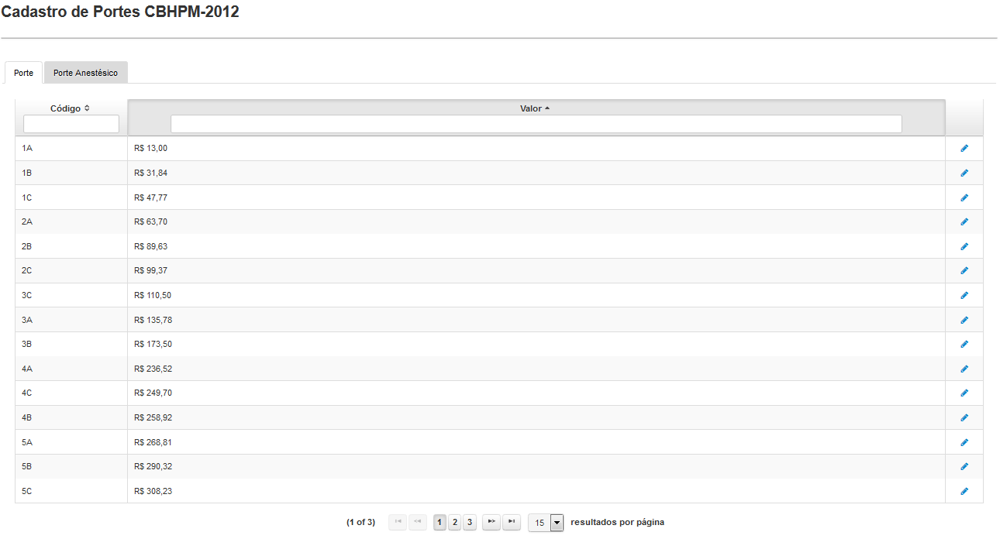
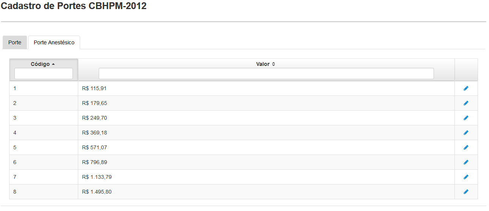

Portes são os 14 portes definidos na CBHPM, cada um com 3 Subdivisões e os seus respectivos valores.
Clicando em 'Portes CBHMPM-2012' surgirá uma tela(Fig.9) onde será apresentada uma lista dos portes.
É possível facilitar a busca de porte utilizando os filtros Código e Valor, bastando apenas clicar e digitar a palavra a ser buscada.

Fig.9 Tela 'Cadastro de Portes CBHMPM-2012'
O botão () permite editar um porte através da tela 'Formulário de Porte'.

Tela 'Formulário de Porte'
As alterações nos valores dos portes são de responsabilidade da organização credenciadora. Nesta versão, o Sistema virá configurado com os códigos previstos na Tabela CBHPM 2012 e com valores de Portes que permitem edição.
Importante: A alteração de quaisquer desses valores será refletida no cálculo de Todos os procedimentos de Todos os credenciados, Sem exceção!!!
Portes anestésicos são os 8 portes definidos na CBHPM e os seus respectivos valores.
Clicando na aba 'Porte Anestésico' será exibida a lista dos portes anestésicos.
É possível facilitar a busca de porte utilizando os filtros Código e Valor, bastando apenas clicar e digitar a palavra a ser buscada.

Fig.10 Tela 'Lista de Portes Anestésicos'
O botão () permite editar um porte anestésico através da tela 'Formulário de Porte Anestésico'.

Tela para edição do porte anestésico
As alterações nos valores dos portes anestésicos são de responsabilidade da organização credenciadora. Nesta versão, o Sistema virá configurado com os códigos previstos na Tabela CBHPM 2012 e com valores de Portes Anestésicos que permitem edição.
Importante: A alteração de quaisquer desses valores será refletida no cálculo de Todos os procedimentos de Todos os credenciados, SEM Exceção!!!